Mulai
Masuk ke aplikasi
Akun tidak dibuat sendiri. Super Admin yang mendaftarkan nomor WhatsApp Anda dan memberikan PIN. Santri jenjang SD memakai akun walinya.
- Buka alamat aplikasi PERISA di Chrome atau Safari.
- Ketik nomor WhatsApp yang terdaftar di kolom Nomor WhatsApp.
- Ketik PIN di kolom PIN. Tekan ikon mata kalau ingin melihat angka yang sudah diketik.
- Tekan Masuk. Aplikasi langsung membuka layar sesuai peran Anda.

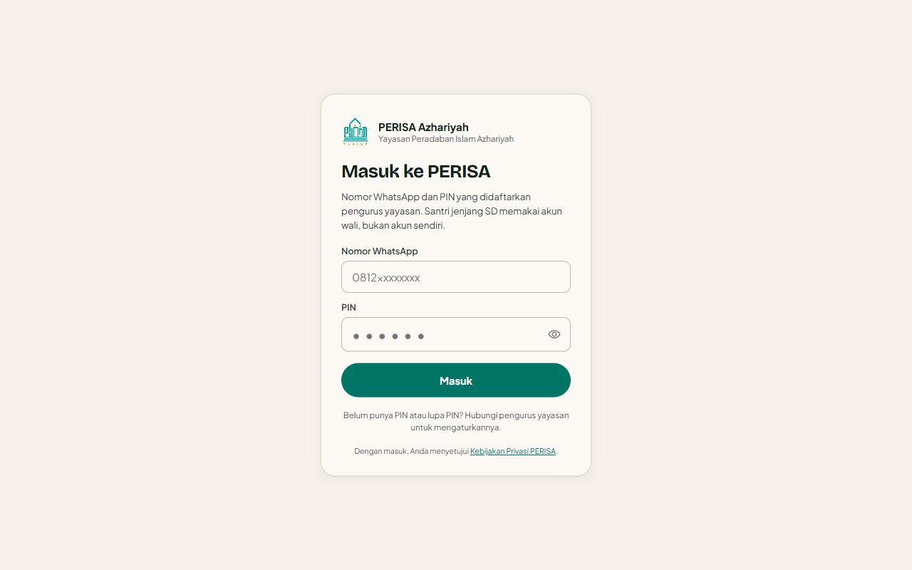
| Peran | Layar pertama |
|---|---|
| Super Admin | Dashboard Yayasan |
| Guru | Dashboard Guru |
| Wali | Dashboard Wali |
Hati-hati salah PIN. Akun terkunci selama 15 menit setelah 5 kali salah. Kalau lupa PIN, jangan terus mencoba. Hubungi Super Admin.
Mengganti PIN
Sebaiknya ganti PIN awal dari Super Admin dengan PIN pilihan Anda sendiri.
- Tekan Ganti PIN di menu samping. Di HP, menu ini ada di menu lengkap, lewat tombol garis tiga di kiri atas.
- Isi PIN sekarang.
- Isi PIN baru dengan 6 sampai 12 angka yang tidak berurutan dan tidak berulang.
- Ketik sekali lagi di Ulangi PIN baru.
- Tekan Simpan PIN Baru.

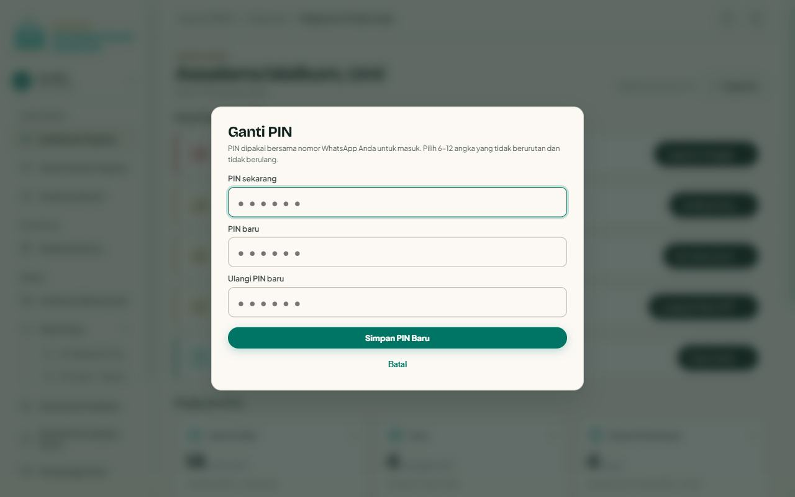
Memasang di HP
PERISA bisa dipasang di layar utama HP dan dibuka seperti aplikasi biasa, tanpa lewat toko aplikasi. Kalau kartu Pasang Aplikasi muncul di layar, cukup tekan Pasang. Kalau tidak muncul, ikuti langkah berikut.
Android (Chrome)
- Buka PERISA di Chrome.
- Buka menu peramban.
- Pilih Pasang aplikasi atau Tambahkan ke layar utama.
iPhone (Safari)
- Buka PERISA di Safari.
- Ketuk tombol Bagikan.
- Pilih Tambahkan ke Layar Utama.

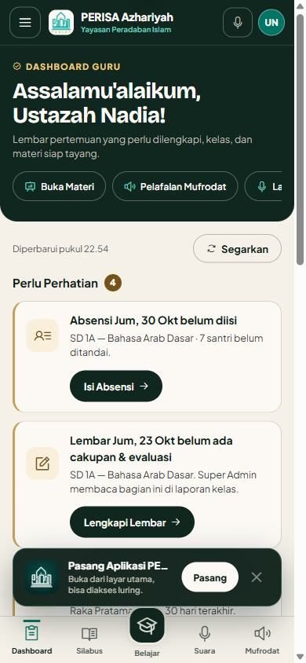
Perlu internet. Halaman dasarnya masih terbuka saat sinyal putus, tetapi pemutar PPT dan data terbaru tetap membutuhkan internet.
Super Admin
Dashboard Yayasan
Mulailah dari sini setiap kali masuk. Layar ini menjawab satu pertanyaan: apa yang perlu ditangani hari ini?

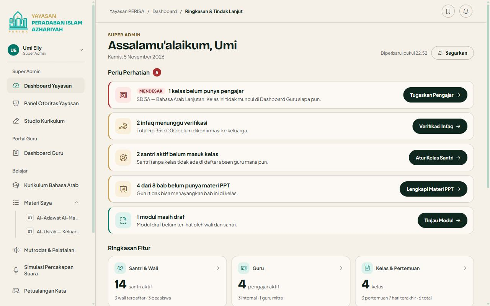
| Butir | Dampaknya | Tombol |
|---|---|---|
| Kelas belum punya pengajar Mendesak | Kelas tidak muncul di Dashboard Guru siapa pun | Tugaskan Pengajar |
| Infaq menunggu verifikasi | Dana belum dikonfirmasi ke keluarga | Verifikasi Infaq |
| Santri aktif belum masuk kelas | Santri tidak ada di daftar absen guru | Atur Kelas Santri |
| Bab belum punya materi PPT | Guru tidak bisa menayangkan bab itu | Lengkapi Materi PPT |
| Modul masih draf | Modul belum terlihat oleh wali dan santri | Tinjau Modul |
Di bawah daftar itu ada Ringkasan Fitur. Tekan salah satu kartu untuk membuka bagiannya. Tekan Segarkan kalau ingin mengambil angka terbaru.
Panel Super Admin
Buka lewat menu Panel Otoritas Yayasan. Panel ini punya tujuh tab.

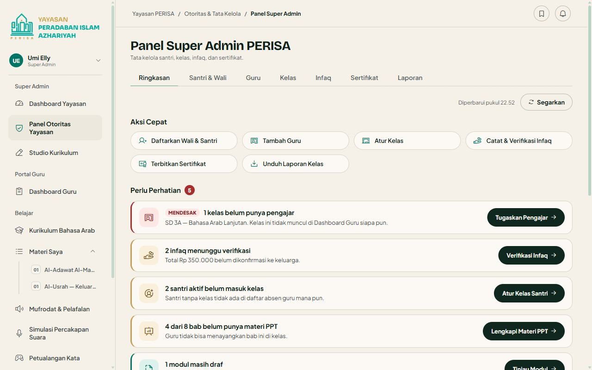
- Ringkasan
- Aksi cepat, urusan yang perlu perhatian, dan pertemuan terbaru.
- Santri & Wali
- Mendaftarkan keluarga, memilih kelas, dan mengatur status.
- Guru
- Mendaftarkan guru dan mengatur kategorinya.
- Kelas
- Membuat kelas, memilih pengajar, dan mendaftarkan santri per kelas.
- Infaq
- Mencatat dan memverifikasi infaq.
- Sertifikat
- Menerbitkan sertifikat level 1 sampai 12.
- Laporan
- Melihat dan mengunduh kehadiran per kelas.
Urutan untuk pertama kali. Daftarkan guru, buat kelas dan pilih pengajarnya, lalu daftarkan santri ke kelas tersebut.
Mendaftarkan wali & santri
Sebelum mulai. Pastikan wali sudah diberi tahu dan menyetujui Kebijakan Privasi. Persetujuan ini menjadi dasar yayasan mengolah data anaknya.
- Buka tab Santri & Wali.
- Tekan + Daftarkan Wali & Santri Baru.
- Isi Nomor WhatsApp Wali dan Nama Wali.
- Isi PIN Login dengan 6 sampai 12 angka.
- Isi Nama Santri dan pilih Jenjang. NISN boleh dikosongkan.
- Centang kotak persetujuan Kebijakan Privasi.
- Tekan Daftarkan.
- Sampaikan PIN langsung kepada wali, jangan lewat pesan yang bisa diteruskan.

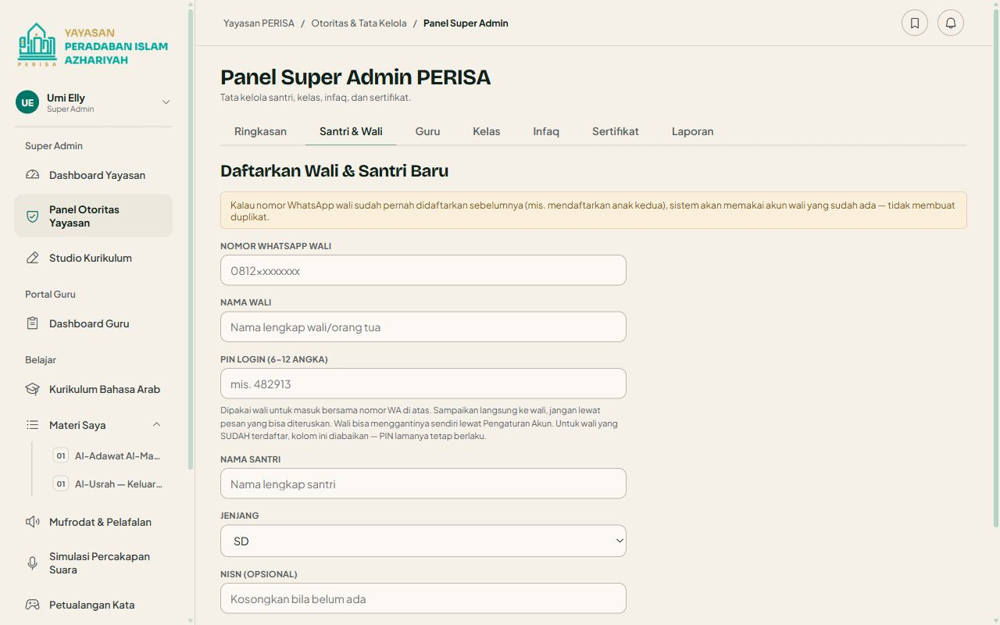
Mendaftarkan anak kedua dan seterusnya
Ulangi langkah yang sama dengan nomor WhatsApp wali yang sama. Sistem memakai akun yang sudah ada, tidak membuat akun ganda. Kolom PIN diabaikan dan PIN lama tetap berlaku.
Mengelola data santri
Setiap santri punya satu baris di tab Santri & Wali.

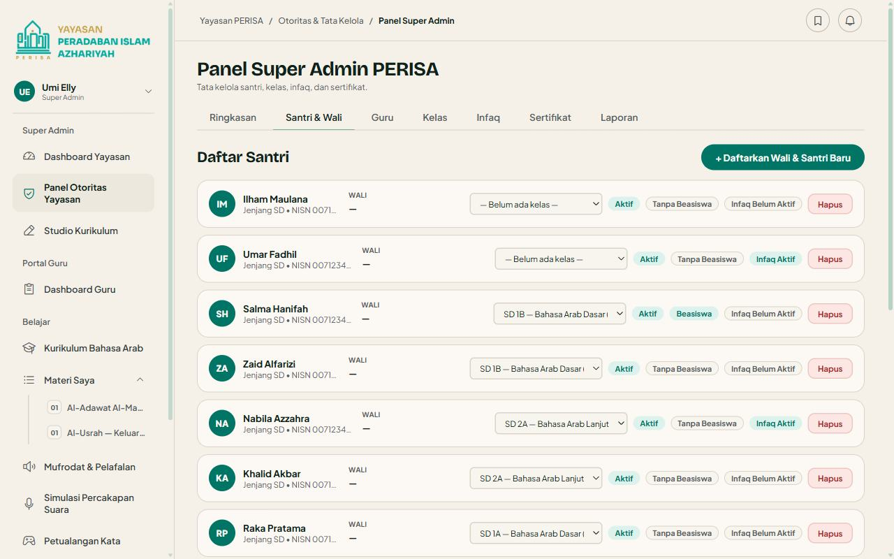
| Yang ingin dilakukan | Caranya |
|---|---|
| Memasukkan santri ke kelas | Pilih kelas pada pilihan Belum ada kelas |
| Mengubah status aktif | Tekan tombol Aktif atau Nonaktif |
| Mengatur beasiswa | Tekan tombol Beasiswa atau Tanpa Beasiswa |
| Mengatur ulang PIN wali yang lupa | Tekan Atur PIN pada baris santrinya |
| Menghapus data atas permintaan wali | Tekan Hapus, lalu konfirmasi |
Hapus bersifat permanen. Pakai hanya untuk permintaan resmi dari wali. Santri yang sudah punya sertifikat tidak bisa dihapus. Hubungi pengurus teknis untuk kasus seperti itu.
Mendaftarkan guru
- Buka tab Guru.
- Tekan + Daftarkan Guru.
- Isi Nama Guru dan Nomor WhatsApp. Satu nomor hanya untuk satu akun.
- Isi PIN Awal dengan 6 sampai 12 angka.
- Pilih Kategori.
- Tekan Daftarkan Guru, lalu sampaikan PIN langsung kepada guru.

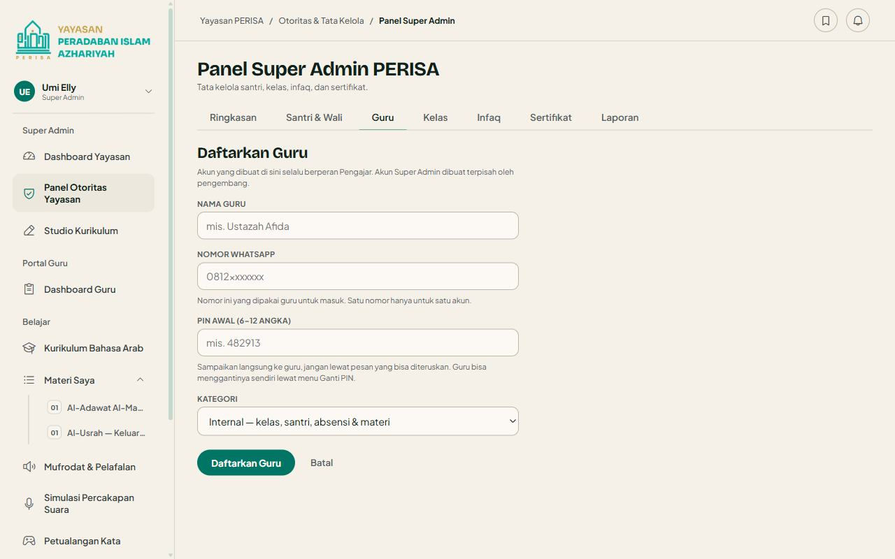
| Kategori | Yang bisa diakses |
|---|---|
| Internal | Kelas, santri, absensi, dan materi |
| Mitra | Materi ajar saja, walau ditugaskan ke sebuah kelas |
Kategori guru bisa diubah kapan saja lewat pilihan di barisnya. Akun Super Admin tidak bisa dibuat dari panel, karena dibuat terpisah oleh pengembang.
Membuat kelas
- Buka tab Kelas.
- Isi Nama Kelas, pilih Jenjang, dan isi Tahun Ajaran.
- Tekan + Buat Kelas.
- Pada kartu kelasnya, pilih pengajar di pilihan Belum ditugaskan.

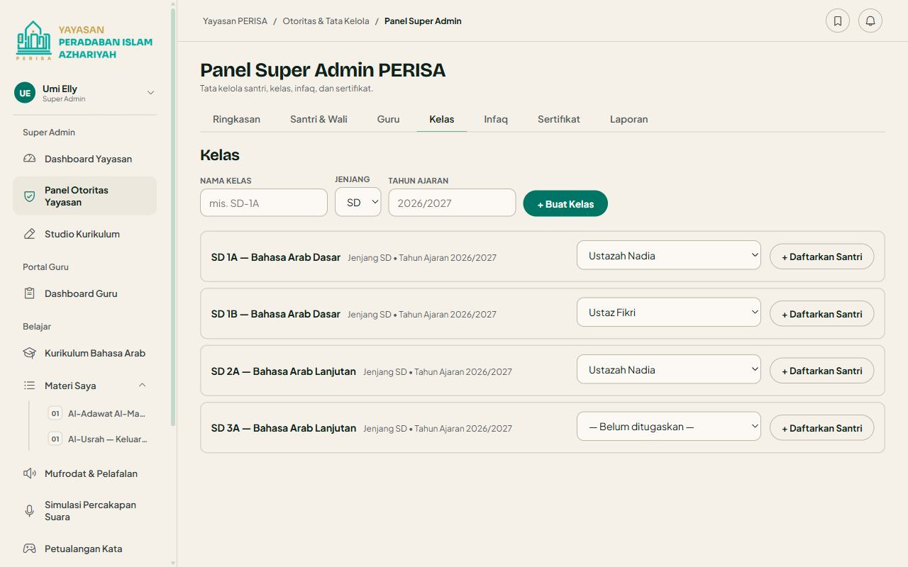
Mendaftarkan banyak santri sekaligus
Cara ini paling cepat kalau walinya belum perlu punya akun.
- Pada kartu kelas, tekan + Daftarkan Santri.
- Ketik nama santri, satu nama per baris.
- Tekan Daftarkan ke Kelas.
Jenjang mengikuti kelasnya. Nama yang sudah ada di kelas itu dilewati, jadi tidak terdaftar dua kali.
Mencatat infaq
- Buka tab Infaq.
- Isi Nomor WhatsApp Wali dan Jumlah. Tulis jumlahnya sebagai angka saja, misalnya 100000.
- Isi Keterangan kalau perlu, misalnya Infaq bulan September.
- Tekan + Catat Infaq. Statusnya menjadi Menunggu Verifikasi.
- Setelah dana benar-benar diterima, tekan Verifikasi pada barisnya.

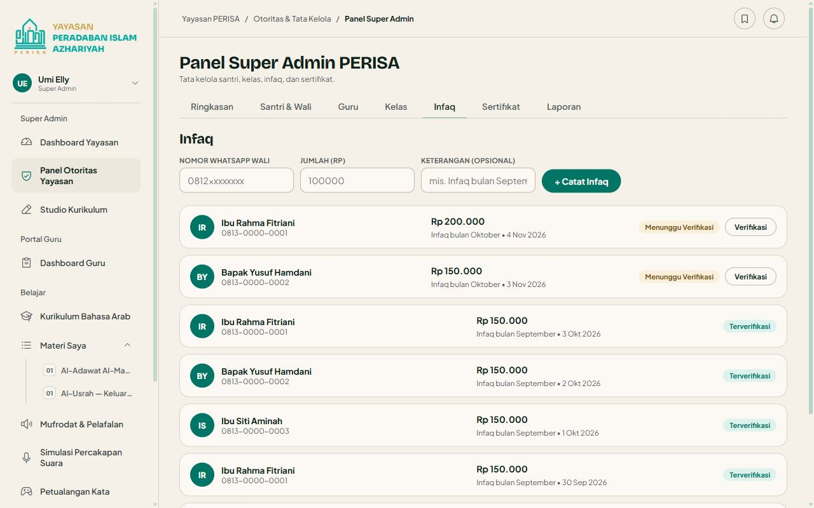
Menerbitkan sertifikat
Kelulusan level ditentukan guru dari buku latihan cetak. Aplikasi mencatat keputusan itu, tidak menghitungnya sendiri.
- Buka tab Sertifikat.
- Pilih santri di pilihan Santri.
- Isi Judul Sertifikat, misalnya Kelulusan Buku 1.
- Pilih Level 1 sampai 12, atau Tanpa level.
- Tekan Terbitkan.
- Tunggu beberapa detik dan jangan tutup halaman selama PDF dirangkai dan diunggah.

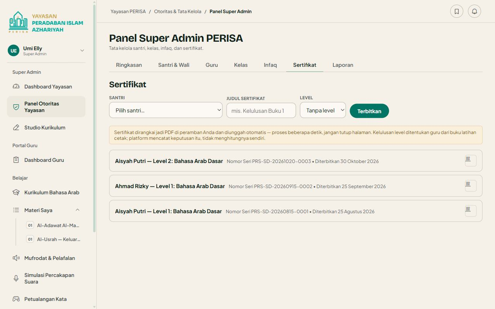
PDF-nya otomatis terunduh ke perangkat Anda. Sertifikat yang terbit mendapat nomor seri dan muncul di daftar pada tab ini. Kabarnya juga tampil di Dashboard Wali.
Laporan kehadiran
- Buka tab Laporan.
- Pilih kelas di Pilih Kelas.
- Baca jumlah hadir, izin, sakit, alfa, dan persentase hadir tiap santri.
- Tekan Ekspor CSV kalau ingin membuka tabelnya di Excel.

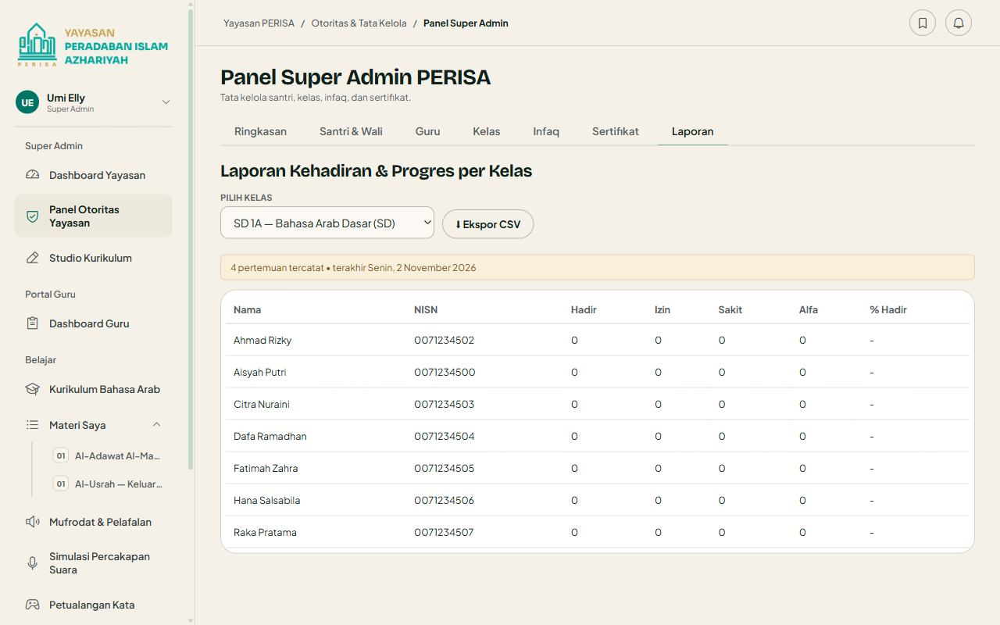
Studio Kurikulum
Modul & pelajaran
Materi tersusun dalam tiga tingkat: modul berisi pelajaran, dan pelajaran berisi mufrodat. Semuanya disusun lewat menu Studio Kurikulum.

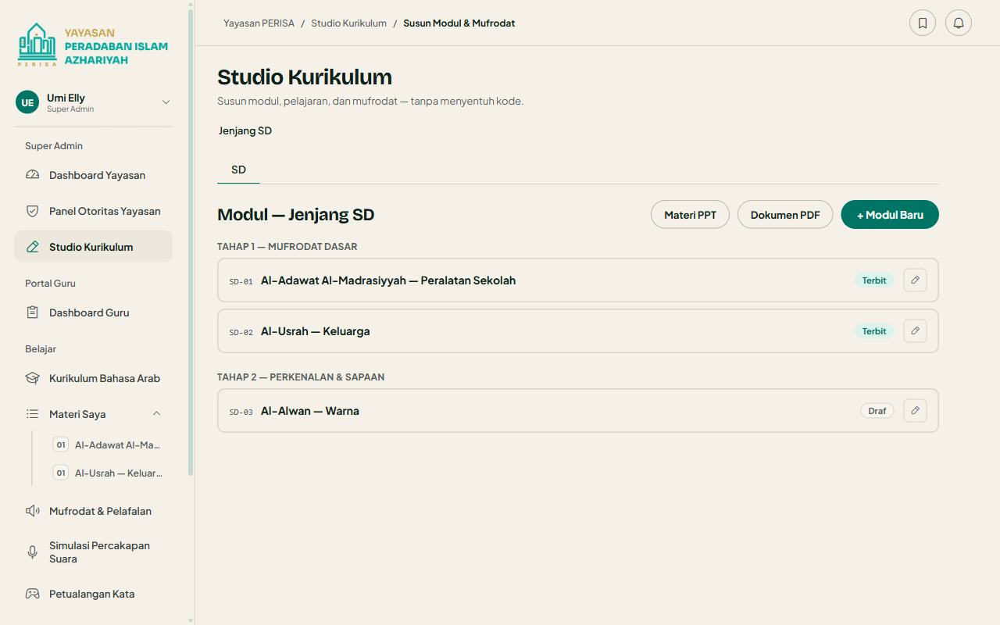
Membuat modul
- Tekan + Modul Baru.
- Isi Kode Modul dan Judul Modul.
- Pilih Tahap Belajar, dari Tahap 1 sampai Tahap 4.
- Isi Urutan. Angka terkecil tampil lebih dulu.
- Tekan Simpan.
Menambah pelajaran
- Tekan modul yang ingin diisi.
- Tekan + Pelajaran Baru.
- Isi datanya, lalu simpan.

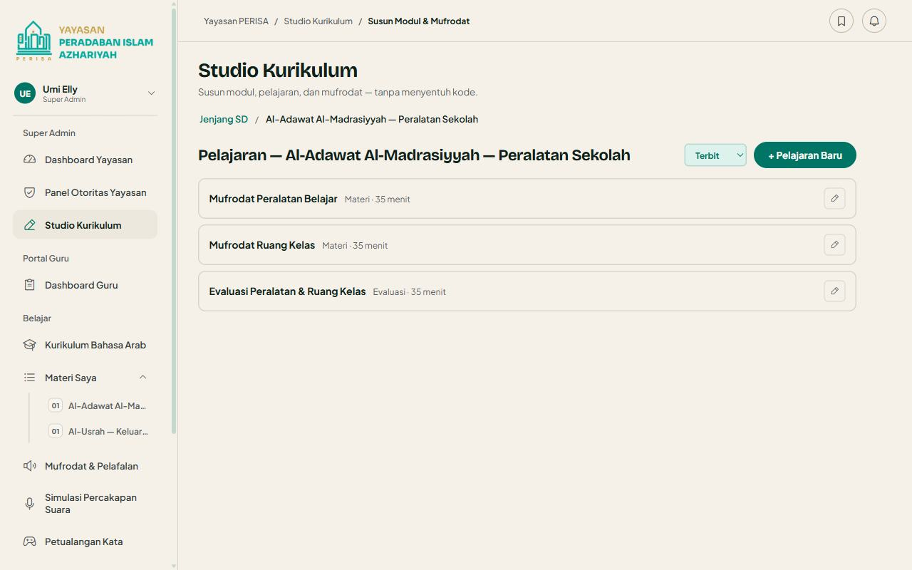
Mengisi mufrodat
Tekan sebuah pelajaran untuk membuka daftar mufrodatnya.

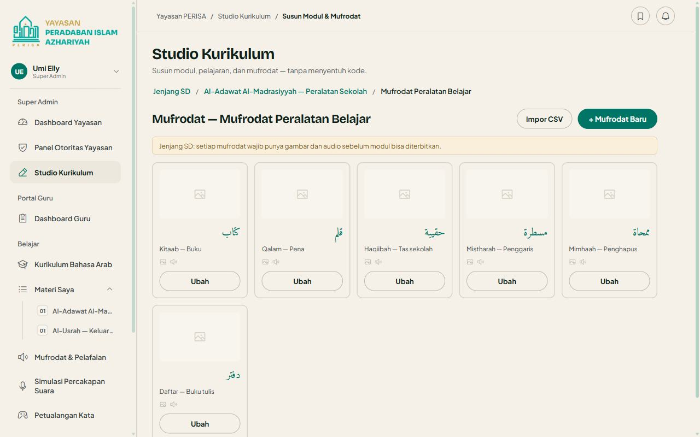
Satu per satu
- Tekan + Mufrodat Baru.
- Isi kata Arab, latin, dan artinya. Ketiganya wajib.
- Tambahkan gambar dan audio pelafalan.
- Simpan.
Banyak sekaligus
- Tekan Impor CSV.
- Tekan Unduh templat CSV kosong.
- Isi templat di Excel atau Sheets.
- Unggah kembali, periksa pratinjaunya, lalu tekan tombol impor.
Khusus jenjang SD. Setiap mufrodat wajib punya gambar dan audio. Tanpa keduanya, modul tidak bisa diterbitkan.
Menerbitkan modul
Status modul diubah lewat pilihan di bagian atas layar modul.
| Status | Yang bisa melihat |
|---|---|
| Draf | Hanya staf. Dipakai selama masih disiapkan. |
| Ditinjau | Hanya staf. Dipakai saat sedang diperiksa. |
| Terbit | Staf, wali, dan santri. |
Kalau modul belum memenuhi syarat, aplikasi menolak dan menampilkan daftar yang harus dilengkapi.
Memasang PPT
PPT ditampilkan oleh PowerPoint milik Microsoft, jadi animasinya tetap utuh. Berkasnya disimpan di OneDrive yayasan, dan aplikasi hanya menyimpan link-nya.
Di OneDrive
- Taruh berkas PPT di OneDrive yayasan.
- Klik kanan berkasnya, atau tekan titik tiga ⋯.
- Pilih Embed (Sematkan), lalu Generate (Buat).
- Salin kode yang muncul.
Di aplikasi
- Buka Studio Kurikulum, lalu Materi PPT.
- Cari bab yang sesuai, lalu tekan Tempel link.
- Tempel kodenya, lalu tekan Simpan.
- Tekan Pratinjau untuk memastikan presentasinya tampil.

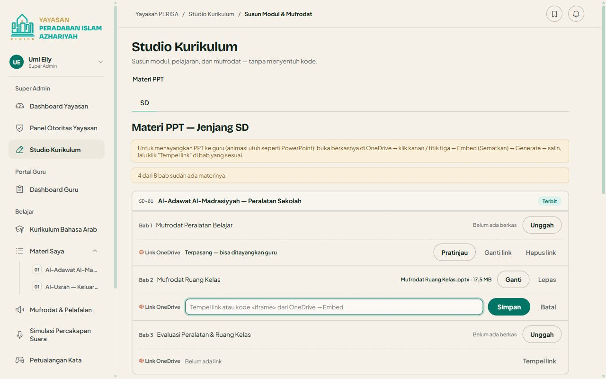
Layar Materi PPT juga menghitung bab yang sudah punya materi, jadi mudah melihat mana yang belum. Super Admin bisa pula memasang PPT langsung dari kotak pemutar di halaman Kurikulum, dengan tombol Setel PPT bab ini atau Ganti PPT.
Untuk memperbarui isi PPT, perbarui saja berkasnya di OneDrive. Link-nya tetap sama, jadi tidak perlu ditempel ulang.
Dua hal yang perlu dijaga. Jangan memindahkan atau menghapus berkas di OneDrive, karena link-nya ikut mati. Jangan pula membagikan link embed di grup, karena siapa pun yang memegangnya bisa membukanya.
Dokumen PDF
Silabus dan modul PDF diunggah lewat Studio Kurikulum, tombol Dokumen PDF. Dokumen yang terbit muncul di menu Modul & Silabus PDF dan dibaca di tempat, tidak diunduh.
Guru
Dashboard Guru
Layar ini mengingatkan pekerjaan yang terlewat dan menampilkan semua kelas yang Anda ampu.

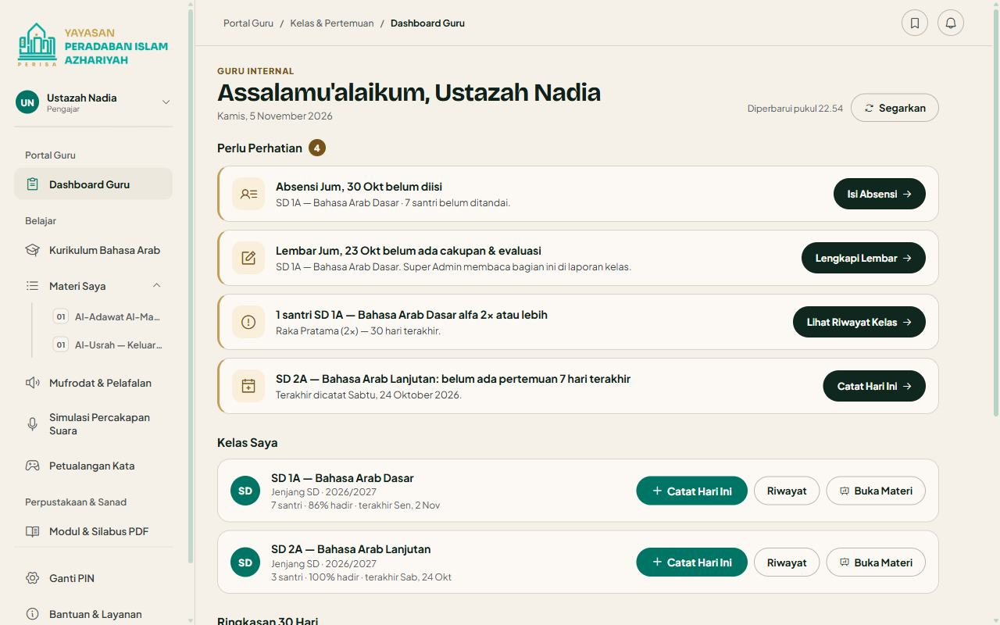
| Butir | Yang perlu dilakukan | Tombol |
|---|---|---|
| Absensi belum diisi | Tandai kehadiran santri pada tanggal itu | Isi Absensi |
| Lembar belum ada cakupan & evaluasi | Lengkapi catatan pertemuan | Lengkapi Lembar |
| Santri alfa 2 kali atau lebih | Periksa riwayat, lalu hubungi walinya | Lihat Riwayat Kelas |
| Belum ada pertemuan 7 hari terakhir | Catat pertemuan hari ini | Catat Hari Ini |
Di bagian Kelas Saya, setiap kelas punya tiga tombol: Catat Hari Ini, Riwayat, dan Buka Materi. Kalau sebuah kelas tidak muncul, minta Super Admin menugaskan Anda ke kelas itu.
Menayangkan materi di kelas
- Sambungkan laptop ke layar kelas.
- Buka menu Kurikulum Bahasa Arab, atau tekan Buka Materi di kartu kelas.
- Pilih bab di panel Struktur Silabus Pembelajaran. Bab yang punya PPT memakai tanda PPT.
- Tekan Tayangkan PPT di kotak pemutar.

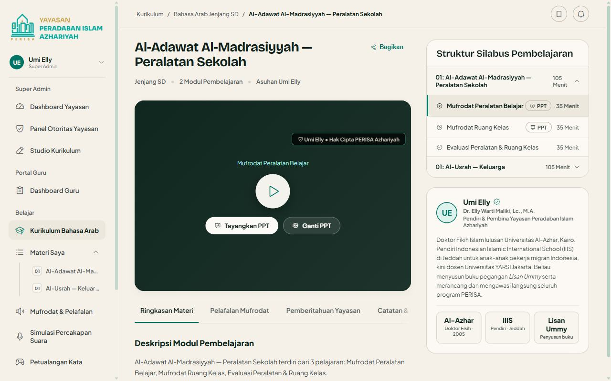
Memutar pelafalan mufrodat
- Di bawah kotak pemutar, buka tab Pelafalan Mufrodat.
- Tekan sebuah kartu untuk mendengar satu kata, atau Putar Keseluruhan untuk semua kata.

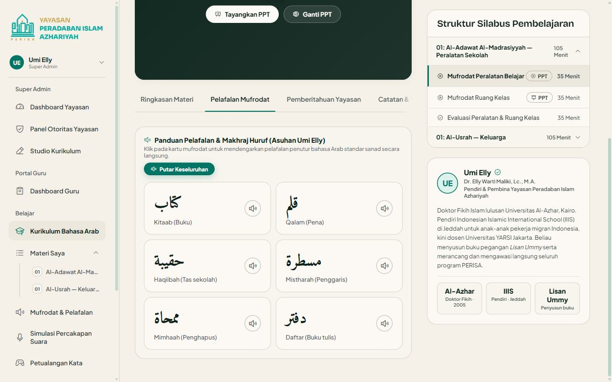
Materi yang sama bisa dibuka lewat menu Mufrodat & Pelafalan. Tombol Bagikan menyalin tautan materi yang sedang dibuka.
Mencatat pertemuan
Satu lembar berlaku untuk satu pertemuan. Isinya cakupan materi, evaluasi, dan absensi.
- Di kartu kelas, tekan Catat Hari Ini.
- Isi Cakupan Pembelajaran, misalnya dari Buku 1 hal. 12 sampai Buku 1 hal. 18.
- Isi Evaluasi Hari Ini tentang jalannya kelas secara keseluruhan.
- Di bagian Absensi, ubah hanya santri yang tidak hadir menjadi Izin, Sakit, atau Alfa.
- Isi Catatan per anak kalau perlu.
- Tekan Simpan Lembar Pertemuan.

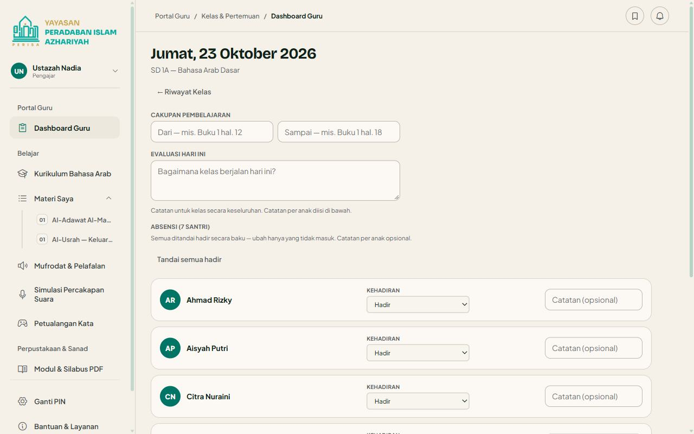
Semua santri sudah ditandai hadir. Anda tidak perlu mengisi satu per satu. Kalau keliru mengubah, tekan Tandai semua hadir untuk mengembalikannya.
Kalau lembar dibuat pada tanggal yang salah, buka lembar itu lalu tekan Hapus Lembar. Absensi di dalamnya ikut terhapus.
Riwayat kelas
Tekan Riwayat di kartu kelas untuk melihat semua pertemuan. Tekan Buka untuk membaca atau memperbaiki sebuah lembar.

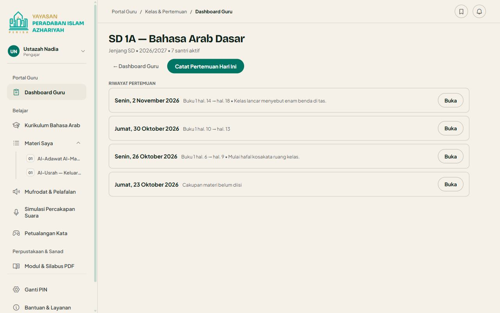
Guru mitra
Guru mitra hanya memegang materi ajar. Santri, absensi, dan sertifikat tidak terlihat, walau akunnya ditugaskan ke sebuah kelas. Bagian Menayangkan materi tetap berlaku.
Wali
Dashboard Wali
Di sini Bapak/Ibu melihat kabar terbaru, sertifikat, dan materi setiap ananda.

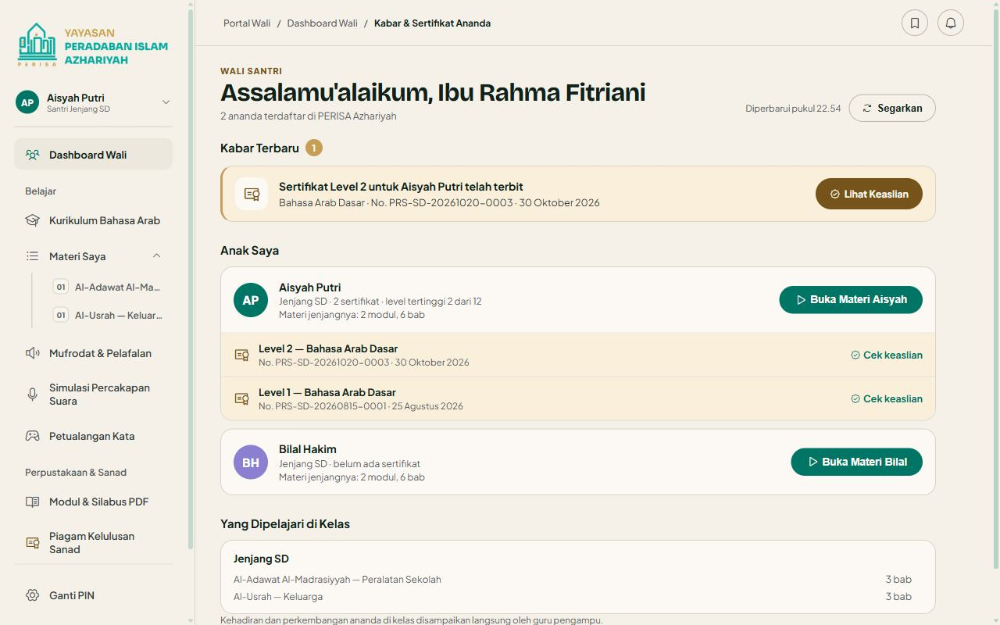
- Kabar Terbaru
- Pemberitahuan saat sertifikat ananda terbit.
- Anak Saya
- Satu kartu untuk tiap anak, berisi jenjang, sertifikat, dan level tertinggi.
- Yang Dipelajari di Kelas
- Daftar modul yang dipelajari pada jenjang ananda.
Tekan Lihat Keaslian atau Cek keaslian untuk membuka halaman verifikasi sertifikat. Piagam juga bisa dibuka lewat menu Piagam Kelulusan Sanad.
Kehadiran ananda. Kehadiran dan perkembangan di kelas belum tampil di aplikasi untuk wali. Guru pengampu menyampaikannya secara langsung.
Materi ananda
- Pada kartu anak, tekan Buka Materi.
- Pilih bab di panel Struktur Silabus Pembelajaran.
- Buka tab Pelafalan Mufrodat untuk mendengar kosakatanya bersama ananda.
Setelah itu ananda bisa berlatih lewat Latihan Percakapan Arab atau bermain Petualangan Kata.
Belajar & umum
Latihan Percakapan Arab
Santri menjawab sapaan Umi Elly dalam empat langkah. Buka lewat menu Simulasi Percakapan Suara.
- Pilih cara menjawab: Suara, atau Pilihan ganda kalau tidak ada mikrofon.
- Tekan Dengarkan Umi Elly.
- Tekan Dengar contoh untuk mendengar jawabannya, atau Pelan untuk versi lambat.
- Tekan Mulai merekam, lalu ucapkan kalimatnya.
- Baca hasilnya, lalu lanjutkan ke langkah berikutnya.

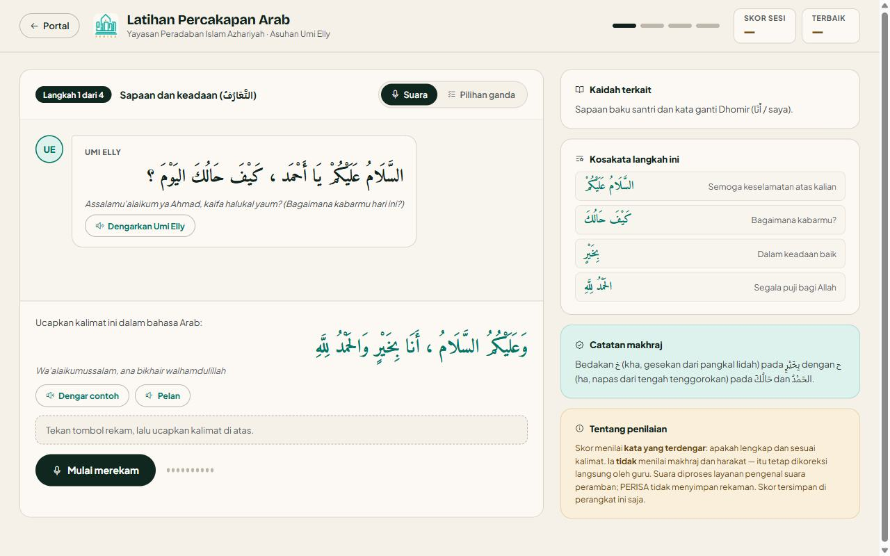
Cara membaca skor. Skor menilai kelengkapan kata yang terdengar, bukan makhraj dan harakat. Keduanya tetap dikoreksi guru. PERISA tidak menyimpan rekaman, dan skor hanya tersimpan di perangkat tersebut.
Petualangan Kata
Permainan kosakata untuk anak. Buka lewat menu Petualangan Kata, pilih tokoh Ali atau Aisyah, tentukan sumber kata di Kata dari, lalu tekan Main pada salah satu mode.

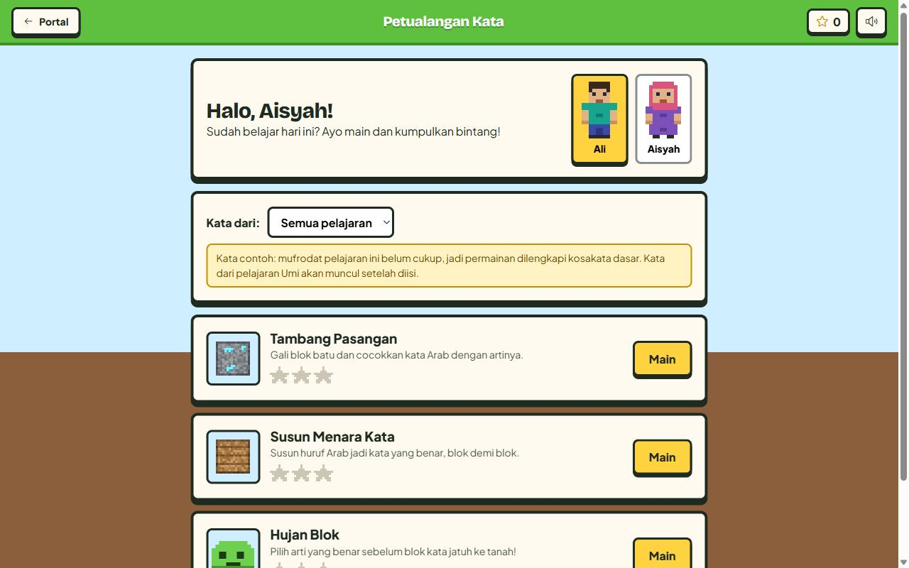
- Tambang Pasangan
- Gali blok batu dan cocokkan kata Arab dengan artinya.
- Susun Menara Kata
- Susun huruf Arab menjadi kata yang benar.
- Hujan Blok
- Pilih arti yang benar sebelum blok kata jatuh ke tanah.
Bintang tersimpan di perangkat dan tidak masuk nilai atau rapor. Kalau mufrodat pelajaran belum cukup, permainan memakai kosakata dasar dan menyebutkannya di layar.
Cek keaslian sertifikat
Siapa pun bisa memeriksa sertifikat tanpa perlu masuk.
- Pindai kode QR pada sertifikat, atau buka halaman verifikasi.
- Kalau tidak memindai, ketik kode verifikasi yang tercetak di bawah kode QR.
- Tekan Periksa.

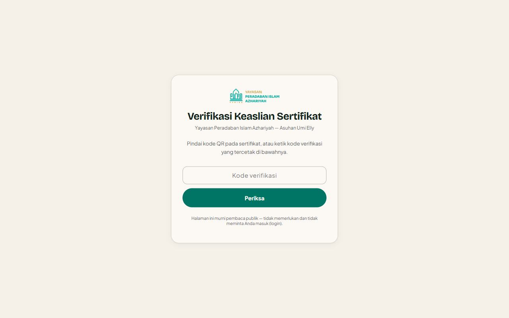
Kalau ada masalah
Tidak bisa masuk
Periksa kembali nomor WhatsApp dan PIN. Kalau sudah salah beberapa kali, berhenti dulu, karena akun terkunci 15 menit setelah 5 kali salah. Lupa PIN? Hubungi Super Admin.
Wali tidak bisa masuk (untuk Super Admin)
Cek nomornya di tab Santri & Wali, lalu tekan Atur PIN kalau perlu. Kalau masih gagal, hubungi pengurus teknis.
Kelas tidak muncul di Dashboard Guru
Kelas itu belum ditugaskan kepada Anda. Minta Super Admin memilih nama Anda di tab Kelas.
Santri tidak ada di daftar absen
Santri itu belum masuk kelas atau statusnya tidak aktif. Super Admin bisa mengaturnya di tab Santri & Wali.
PPT tampil kosong atau hitam
Buka Studio Kurikulum, Materi PPT, lalu tekan Pratinjau pada bab itu. Kalau tetap kosong, berkasnya mungkin sudah dipindahkan atau link yang ditempel bukan link Embed. Ambil link baru dan tempel ulang.
Materi yang diterbitkan tidak muncul
Pastikan status modul benar-benar Terbit, bukan Draf atau Ditinjau.
Modul tidak bisa diterbitkan
Baca daftar yang ditampilkan aplikasi. Pada jenjang SD, penyebab yang sering muncul adalah mufrodat yang belum punya gambar atau audio.
Mikrofon tidak berfungsi di latihan percakapan
Izinkan akses mikrofon saat peramban memintanya. Kalau tetap tidak bisa, pakai mode Pilihan ganda.
Bintang atau skor hilang
Bintang dan skor hanya tersimpan di perangkat. Keduanya tidak terbawa ke HP lain dan bisa hilang kalau data peramban dibersihkan.
Tampilan terasa aneh atau rusak
Muat ulang halaman. Kalau masih terjadi, catat langkah yang dilakukan sebelum masalah muncul, lalu sampaikan kepada pengurus teknis.